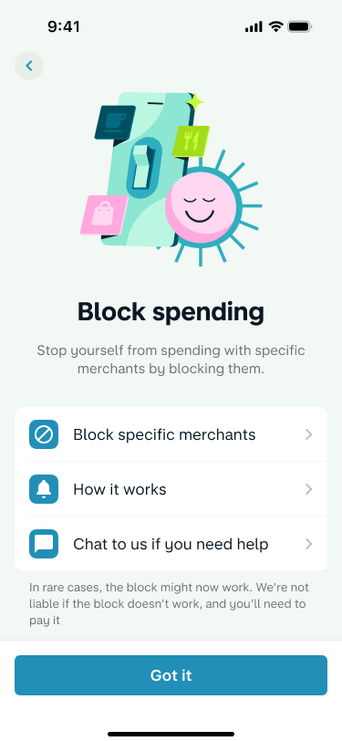
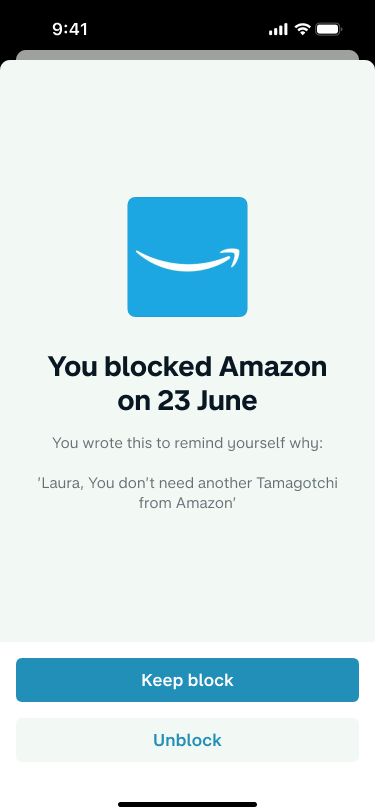

Specific merchants, not whole categories
Inconsistent merchant categorisation ruled out reliable category-wide blocks.
Helping customers put a boundary between an impulse and a purchase—on their own terms.


Adoption reported in the project retrospective; reporting window unspecified. Adoption is not a measure of reduced financial harm.
We began without a defined solution. I organised lightning talks and a workshop with vulnerability specialists, designers and researchers to identify where Monzo could help.
We mapped evidence into facts, insights and opportunities, then prioritised what we could act on with the time and skills available.
How could we help people interrupt unwanted spending, while keeping the choice in their hands?
I designed a clear hub for finding and managing blocks. Customers chose which merchants to block; we avoided suggesting blocks against particular purchases, which could feel judgemental.
Explaining a reason was optional. Help should not depend on disclosing something personal.
Customers could write themselves a reminder during setup. If they later tried to unblock the merchant, we showed their own words before the decision.
The product creates a moment to reconsider. The customer stays in control.
With one engineer and two weeks, I worked with engineering to choose a feasible release rather than imply protection we could not provide.
Inconsistent merchant categorisation ruled out reliable category-wide blocks.
Bank-transfer restrictions needed support-team intervention.
Time-based blocks and a delay before unblocking were outside the first release.
The gambling-block designs bring confidentiality and an optional personal reminder into onboarding, explaining what the feature does and how personal information is handled.
This is related design work, shown separately from the Spending Block release and its adoption figure.
Operations, vulnerability experts and Mastercard knowledge helped us see risks and constraints before committing to a solution.
Reported feedback described greater control. The next step is evidence of sustained benefit, alongside checks for unintended consequences.
Category accuracy, broader availability and a cooldown were follow-up opportunities, rather than capabilities of this first release.
I led the discovery process, facilitated the workshop, shaped the design principles and worked with engineering on feasible journeys and trade-offs. I designed the wireframes and prototypes and iterated with feedback.
The retrospective records a two-week development and launch in Monzo Labs, enabling customers to block selected merchants in the app. It reports over 10,000 adopters, positive coverage and qualitative feedback about feeling more in control. It does not provide a reporting window or a quantified reduction in financial harm.
Blocking similar merchants and entire categories, introducing a cooldown and expanding beyond Labs remained future improvements at the time of the retrospective.